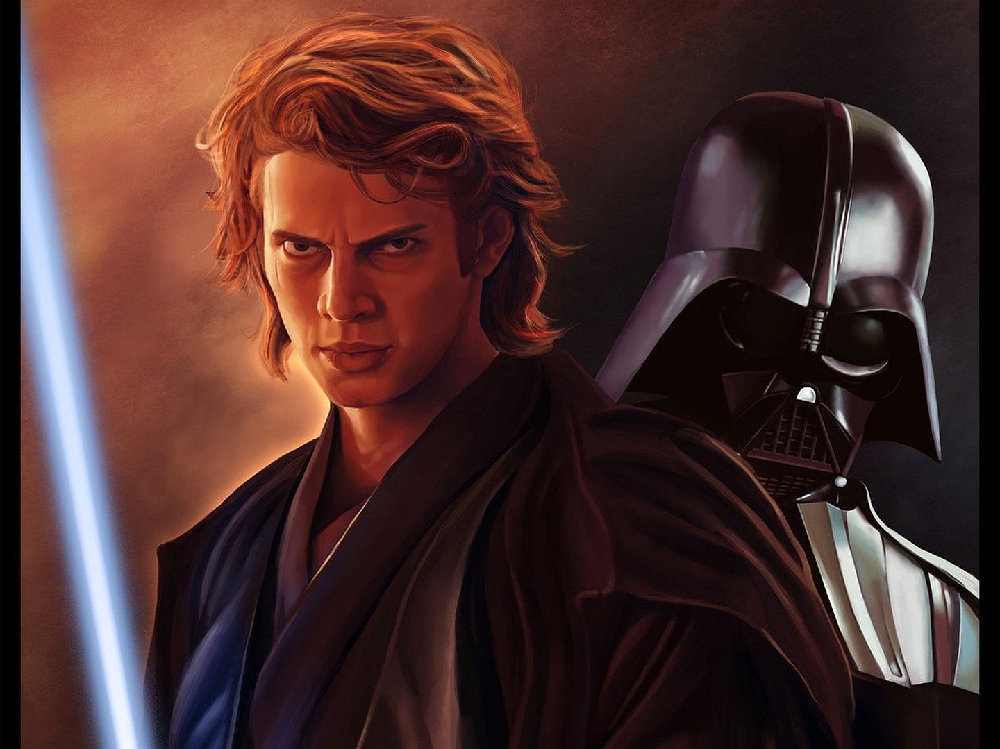

Personajes Importantes de la Saga
Luke Skywalker

Un granjero de Tatooine que se convirtió en uno de los más grandes Maestros
Jedi de la galaxia. Jugó un papel crucial en la derrota del Imperio Galáctico
y en la redención de su padre, Darth Vader. Su viaje desde un joven
impaciente hasta un sabio maestro es el corazón de la trilogía original.
Darth Vader (Anakin Skywalker)

Considerado el "Elegido" de una profecía Jedi, Anakin Skywalker fue un
poderoso Caballero Jedi que fue seducido por el lado oscuro de la Fuerza
en un intento desesperado por salvar a sus seres queridos. Como Darth Vader,
se convirtió en el ejecutor del Emperador Palpatine hasta su redención final.
Princesa Leia Organa
Una de las líderes más importantes de la Alianza Rebelde y, más tarde,
de la Resistencia. Valiente, diplomática y fuerte en la Fuerza.
Es la hermana gemela de Luke Skywalker e hija de Padmé Amidala y
Anakin Skywalker, luchando incansablemente por la libertad de la galaxia.
Han Solo

Un contrabandista cínico y capitán del Halcón Milenario, junto a su
leal wookiee, Chewbacca. Inicialmente interesado solo en el dinero,
se une a la Rebelión por lealtad a sus amigos y se convierte en
uno de sus mayores héroes y generales.